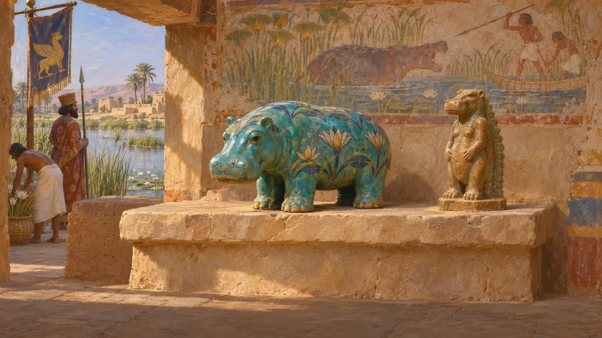
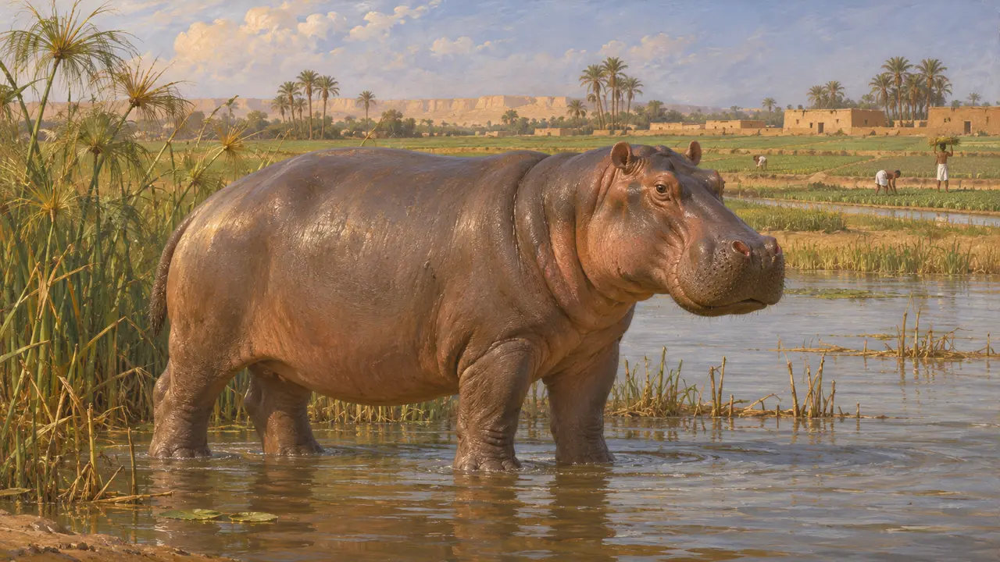
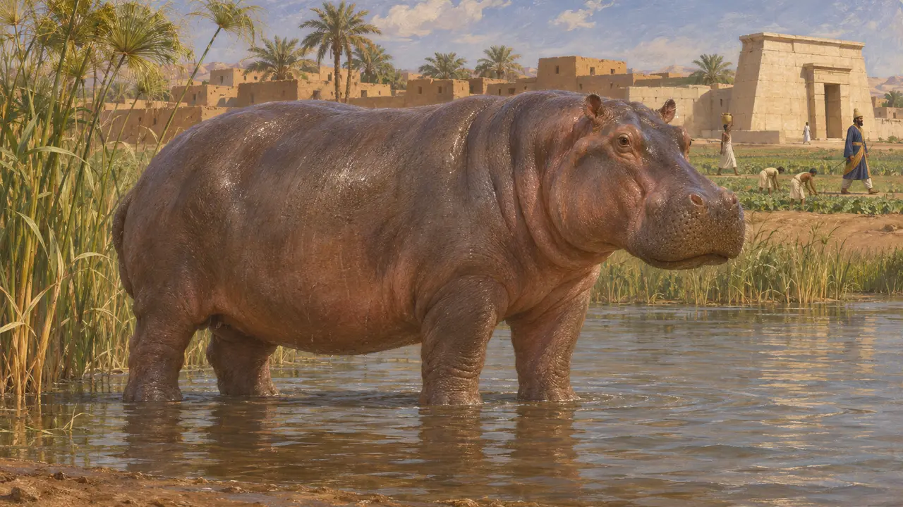

Enzyklopädie › Tierwelt und Wetter

Das Nilpferd
Flusstier des Nils in Ägypten unter persischer Herrschaft, 6.-5. Jahrhundert v. Chr.
Im Spiel: Level 2: Der Lanzenträger
Das Nilpferd lebte im Nil, als Kambyses und Dareios über Ägypten herrschten, und Herodot widmete ihm in seinem ägyptischen Buch eine kurze Beschreibung. In ägyptischer Kunst und Religion war es ein vertrautes Tier, zugleich groß und gefährlich. Im Memphis-Level erscheint es als Flusskulisse.
Im Spiel: Das Spiel zeigt das Nilpferd im Fluss bei Memphis, als Wildtier auf Land, das die Stadt noch nicht erschlossen hat. Es ist reine Kulisse, und keine Regel wertet es aus. Krokodile halten sich ans Ufer, Nilpferde ans Wasser.
Herodot über das Flusspferd
Antiker BerichtHerodot beschreibt das Nilpferd in seinem ägyptischen Buch. Er sagt, es sei im Gebiet von Papremis heilig gewesen, im übrigen Ägypten aber nicht. Er gibt ihm gespaltene Hufe, eine Pferdemähne und einen Pferdeschwanz sowie große Hauer und nennt es das Flusspferd, wie sein griechischer Name besagt. Einige dieser Angaben sind falsch, denn seine Füße sind nicht in der von ihm beschriebenen Weise gespalten und es hat keine echte Mähne; sein Bericht ist daher eher als Hörensagen denn als genaue Beobachtung zu lesen.
Herodotus 2.71

Das Nilpferd im ägyptischen Leben
Zeitgenössisch belegtDie ägyptische Kunst zeigte das Nilpferd über Jahrtausende hinweg, in Sumpfjagdszenen und in Fayencefiguren, die man in Gräber legte. Es wurde zugleich gefürchtet und verehrt, und die Göttin Taweret, dargestellt mit dem Körper eines Nilpferds, schützte Frauen bei der Geburt. Diese Bilder stammen von ägyptischen Denkmälern und Gegenständen vieler Epochen, nicht allein aus der Perserzeit, doch sie zeigen den bleibenden Platz des Tieres in der Kultur, über die die Perser herrschten.
Egyptian monuments and tomb objects of many periods, without a single citation

Ein schrumpfendes Verbreitungsgebiet
UmstrittenNilpferde lebten in der Antike im ägyptischen Nil und verschwanden später aus Unterägypten. Historiker und Zoologen sind sich nicht einig, wann, denn Jagd, Trockenlegung und Ackerbau spielten alle eine Rolle, und Texte und Bilder zeigen nicht immer lebende Tiere. Herodots Beschreibung kann bedeuten, dass das Tier zu seiner Zeit noch bekannt war, doch er sagt nicht, wie häufig es war.
Herodotus 2.71; modern studies of Egyptian fauna, without a single citation

Die Perser in Ägypten
Zeitgenössisch belegtKambyses eroberte Ägypten im Jahr 525 v. Chr., und Ägypten wurde eine persische Satrapie. Die Statue des Udjahorresnet und die Apis-Stelen zeigen, dass ägyptische Priester, Beamte und Kulte unter persischer Herrschaft fortbestanden. Keine persische Quelle behandelt das Flusspferd selbst.
Statue of Udjahorresnet; Apis stelae of the Serapeum
Quellen
- Herodotus 2.71
- Herodotus 2.68-70
- P. Briant, From Cyrus to Alexander, 2002
- Statue of Udjahorresnet
- Apis stelae of the Serapeum